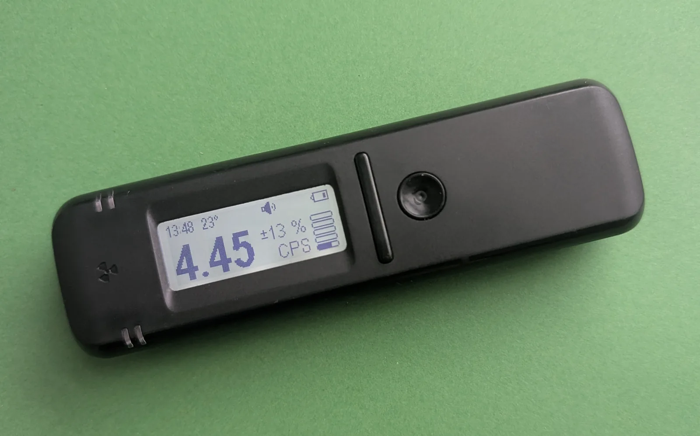
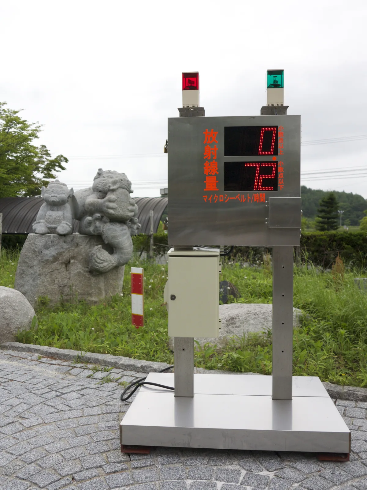

Radiation dose and radiation safety in Finland
Why do nuclear power plants give a Finn only a negligible part of their radiation dose, and where does the rest come from?
Prior knowledge
- Ionising radiation damages cells, and alpha, beta and gamma radiation differ in penetrating powerchapter Ionising radiation and the body
- The amount of a radioactive substance halves during every half-lifechapter The decay law and half-life
Core path: follow the steps in order. Besides calculations, the core path includes investigations, explanations and graphs. Tasks marked Optional give extra practice. Optional tasks: 3.
Think about it
A Finn receives a radiation dose of about $5.9\,\text{mSv}$ per year on average. The share of nuclear power plants in it is negligible. Where does the rest come from: examinations in hospitals, space, the ground under our feet or somewhere else? On the other hand, a maintenance worker at a nuclear power plant works near radiation sources, and their dose must still be kept below the legal limit.
Where does a Finn's radiation dose come from, and how can a person working near a radiation source keep their own dose small?
Optional Review: the penetrating power of alpha radiation
Predict
Make your predictions before investigating 3 questions
Prediction 1: double the distance
Prediction 2: double the shielding
Prediction 3: the largest source of dose
Investigate
Simulation
How to use
Distance moves the meter to $1.0$–$4.0\,\text{m}$ from the source in steps of $0.5\,\text{m}$, and Lead sets the thickness of the lead plate to $0$–$30\,\text{mm}$. Start time runs the time spent from $0$ to $60\,\text{min}$, and Stop stops it; the time can also be moved with the slider. In the picture photons fly from the source as orange dots. A photon absorbed in the lead flashes in the lead, and one that hits the window of the meter makes the window flash. Above the meter is the dose rate it shows. Speed changes only the pace of the time and the flight of the photons.
Assumptions of the model
The source is a point-like model source of gamma radiation whose dose rate is $40.0\,\mu\text{Sv/h}$ at a distance of $1.0\,\text{m}$ without a shield. The half-value thickness of lead in the model is $d_{1/2} = 6.0\,\text{mm}$. The model assumes that the air does not attenuate the radiation and that no photons scattered in the lead get through. Background radiation is not included. The photons in the picture illustrate the model, but the readings are calculated: they are values of the model, not measurements.
How the calculation works
Photons leave the source evenly in all directions. At distance $r$ they are spread over a sphere of area $4\pi r^2$, so the fraction $\tfrac{A}{4\pi r^2}$ hits the window of the meter, where $A$ is the area of the window. The dose rate without a shield is therefore $\dot{H} = 40.0\,\mu\text{Sv/h} \cdot \left(\tfrac{1\,\text{m}}{r}\right)^2$. Lead lets through the fraction $\left(\tfrac{1}{2}\right)^{d/6.0\,\text{mm}}$, which is shown in the readings as a percentage. The dose is $H = \dot{H} t$ when the time is converted to hours: $1\,\text{min} = \tfrac{1}{60}\,\text{h}$.
A gamma source is in a lead container. Move the radiation meter, add lead between the source and the meter and let the time spent run. Follow the dose rate $\dot{H}$ and the accumulating dose $H$.
Experiment 1: distance
Test prediction 1. There is no lead. Change only the distance and record the dose rate $\dot{H}$ at least at the distances $1.0$, $2.0$ and $4.0\,\text{m}$, and at $3.0\,\text{m}$ too if you wish.
Initial state: distance $r$ = $1\,\text{m}$, lead $d$ = $0\,\text{mm}$, time spent $t$ = $0\,\text{min}$. Kept constant: lead $d$, time spent $t$. Varied: distance $r$.
| distance $r$ | $\dot{H}\ (\mu\text{Sv/h})$ |
|---|
More to investigate 2 tasks
Experiment 2: lead shield
Test prediction 2. The meter is $1.0\,\text{m}$ from the source. Change only the thickness of the lead and record the dose rate $\dot{H}$ at least at the thicknesses $0$, $6$, $12$ and $18\,\text{mm}$.
Initial state: distance $r$ = $1\,\text{m}$, lead $d$ = $0\,\text{mm}$, time spent $t$ = $0\,\text{min}$. Kept constant: distance $r$, time spent $t$. Varied: lead $d$.
| lead $d$ | $\dot{H}\ (\mu\text{Sv/h})$ |
|---|
Conclusion: distance and shielding
Write on the basis of your tables: What happened to the dose rate when the distance doubled? What happened after every $6\,\text{mm}$ layer of lead? Why do distance and shielding have different effects?
Model answer
In experiment 1 the dose rates of the model were $40.0$, $10.0$ and $2.50\,\mu\text{Sv/h}$ at the distances $1.0$, $2.0$ and $4.0\,\text{m}$: when the distance doubled, the dose rate fell to a quarter. The reason is that radiation leaving the source in every direction is spread over the surface of a sphere whose area grows as the square of the distance. In experiment 2 the lead thicknesses $0$, $6$, $12$ and $18\,\text{mm}$ gave $40.0$, $20.0$, $10.0$ and $5.00\,\mu\text{Sv/h}$: every $6\,\text{mm}$ layer halved the dose rate, because it attenuates the same fraction of the photons arriving at it. Distance therefore acts as a square, shielding halves layer by layer, and neither takes the dose rate to zero.
Assess your own answer
Tick the points your own answer already contains.
Theory
Key idea
Dose measures the energy left in tissue
Ionising radiation damages cells because it gives up its energy by knocking electrons out of atoms and molecules (chapter Ionising radiation and the body). The starting point for assessing the harm of radiation is therefore how much energy is left in the tissue. The absorbed dose $D$ is the radiation energy absorbed by tissue or another material divided by its mass. Its unit is the gray: $1\,\text{Gy} = 1\,\tfrac{\text{J}}{\text{kg}}$. Dividing by mass is necessary because the same energy concentrated in a small amount of tissue damages every cell more than the same energy spread over a large amount.
The energies are small on the scale of heat. A dose of $1\,\text{Gy}$ would warm water by only about $0.0002\,\text{K}$, yet receiving the same dose over the whole body at once already causes radiation sickness. The harm is therefore not caused by warming, but by the energy arriving in large packets that break individual molecules, such as DNA.
The same energy, different harm: weighted doses
An alpha particle leaves a dense track of ionisation over a short distance, whereas a gamma photon ionises sparsely over a long distance. The same absorbed dose from alpha radiation therefore damages the DNA of cells more than from gamma radiation. Tissues also differ: red bone marrow and the lungs are more sensitive to radiation-induced cancer than the skin. In radiation protection these differences are taken into account with weighting factors, and the unit of a weighted dose is the sievert, $\text{Sv}$. The effective dose of the whole body is used to estimate the long-term cancer risk caused by small doses for an average person, not anyone's individual risk, and with it very different exposures, such as radon, an X-ray examination and a flight, can be compared.

Where a Finn's radiation dose comes from
According to the Radiation and Nuclear Safety Authority (STUK), a Finn receives an effective dose of about $5.9\,\text{mSv}$ per year on average. Most of it comes from nature: about $5.1\,\text{mSv}$, or about $85\,\%$. The combined share of nuclear power plants, the Chernobyl fallout and nuclear weapons tests is less than $0.1\,\text{mSv}$. The table and the bar chart below it show the same numbers.
| Source | Dose per year |
|---|---|
| indoor radon | about $4\,\text{mSv}$ |
| other natural radiation | about $1.1\,\text{mSv}$ |
| health care | about $0.8\,\text{mSv}$ |
| nuclear power, fallout and others | $< 0.1\,\text{mSv}$ |
| total | about $5.9\,\text{mSv}$ |
Source: STUK-A263 (2020), an estimate of the situation in 2018, rounded; the share of health care is $0.76\,\text{mSv}$ in the report. The share of health care comes from X-ray and isotope examinations. Other natural radiation consists of the gamma radiation of soil and building materials, radiation from space and the body's own radioactive substances, such as potassium-40. This is an average: an individual's dose depends above all on the radon concentration of their home and can be many times higher.
Background radiation is the radiation that constantly comes from natural sources in the environment: radioactive substances in the soil and bedrock, radiation from space and radon in the air. Outdoors in Finland the dose rate of external background radiation is usually $0.05$–$0.30\,\mu\text{Sv/h}$, and STUK's monitoring network measures it continuously around the country. In an aeroplane the dose rate is many times higher, about $3\,\mu\text{Sv/h}$ on a typical long-haul flight, because the higher you are, the less the atmosphere shields you from radiation from space.
Radon: an invisible gas from the bedrock
Radon is a radioactive noble gas. Its most common isotope, radon-222, is formed from radium in the decay series of uranium-238 in the soil and bedrock, and its half-life is $3.82\,\text{d}$ (chapter The decay law and half-life). The granitic bedrock of Finland contains a lot of uranium, and the gravel of eskers lets soil air through easily. In winter warm indoor air rises and leaks out of the upper parts of a house, which creates an underpressure in the lower part of the house. It sucks radon-containing soil air in through cracks and gaps in the foundations.
Most of the radon itself is breathed out again, but its short-lived decay products, isotopes of polonium, lead and bismuth, are solids. They attach to dust particles in the air and remain on the surfaces of the airways. There polonium-218 and polonium-214 emit alpha radiation directly into the cells of the lungs. After smoking, radon is the most important cause of lung cancer: according to STUK, it causes about 300 lung cancers per year in Finland.
The radon concentration is given in becquerels per cubic metre: $1\,\tfrac{\text{Bq}}{\text{m}^3}$ means one decay per second in a cubic metre of air. According to STUK's nationwide sample surveys, the average concentration in Finnish homes is about $94\,\tfrac{\text{Bq}}{\text{m}^3}$. The reference level for dwellings is $300\,\tfrac{\text{Bq}}{\text{m}^3}$ and for new buildings $200\,\tfrac{\text{Bq}}{\text{m}^3}$ (decree of the Ministry of Social Affairs and Health 1044/2018). The concentration is measured with a radon detector can, which is left in the dwelling for two months during the heating season. The concentration can be reduced by improving ventilation, sealing gaps in the foundations and sucking radon-containing air from under the house with a radon suction pipe or a radon well.

Protection: time, distance and shielding
There are three ways to protect yourself from an external radiation source. Time: the dose grows in direct proportion to the time spent near the source, so near a radiation source only what is necessary is done, and quickly. Distance: from a point source radiation spreads in all directions over an ever larger area, so the dose rate decreases rapidly as the distance grows. Shielding: material between the source and the person absorbs radiation. Alpha radiation is stopped by paper or the dead surface layer of the skin, beta radiation by a plastic or aluminium plate a few millimetres thick. Gamma radiation is attenuated best by dense materials, such as lead and concrete, but no layer stops it completely.
Protection from internal radiation sources, such as the decay products of radon or radioactive substances in food, works differently: the substances are prevented from entering the body. Radon is removed from indoor air, and, for example, mushrooms that accumulate a lot of caesium-137 are not eaten in large amounts.
The use of radiation is limited by dose limits. The effective dose of a person doing radiation work may be at most $20\,\text{mSv}$ per year, and the dose of the public from the use of radiation at most $1\,\text{mSv}$ per year (Radiation Act 859/2018). The limit for the public does not apply to natural radiation or to a patient's own medical examinations, whose benefit is assessed separately.
Absorbed and effective dose
Absorbed dose
When the mass of the tissue is $m$ and it absorbs energy $E$ from radiation, the absorbed dose is
$$D = \frac{E}{m}$$
where $D$ is the absorbed dose ($\text{Gy}$), $E$ the absorbed energy ($\text{J}$) and $m$ the mass of the tissue ($\text{kg}$). The absorbed dose is a physical quantity: it does not tell what kind of radiation it was.
Equivalent dose and the radiation weighting factor
The equivalent dose of an organ or tissue $\text{T}$ takes the type of radiation into account:
$$H_\text{T} = w_\text{R} D_\text{T}$$
where $H_\text{T}$ is the equivalent dose of the tissue ($\text{Sv}$), $w_\text{R}$ the radiation weighting factor (a pure number) and $D_\text{T}$ the absorbed dose of the tissue ($\text{Gy}$). The weighting factor is a rounded value agreed on in radiation protection. It describes how much more harmful a type of radiation is than gamma radiation at the same absorbed dose, but it is not an exact measured ratio of the damage in every cell. The factor for neutrons depends on their energy.
| Type of radiation | $w_\text{R}$ |
|---|---|
| gamma and X-ray radiation | $1$ |
| beta radiation (electrons) | $1$ |
| alpha radiation | $20$ |
| neutrons | $2.5$–$20$ |
Effective dose and the tissue weighting factor
When only a part of the body is irradiated, the equivalent dose of each tissue is multiplied by the tissue weighting factor $w_\text{T}$, which describes its sensitivity, and the products are added up:
$$H_\text{E} = w_{\text{T}1} H_{\text{T}1} + w_{\text{T}2} H_{\text{T}2} + \ldots$$
where $H_\text{E}$ is the effective dose ($\text{Sv}$) and $w_{\text{T}1}, w_{\text{T}2}, \ldots$ are the weighting factors of the irradiated tissues. The international symbol of the effective dose is $E$; in this chapter the symbol $H_\text{E}$ is used so that it is not confused with the energy $E$.
The tissue weighting factors are:
- $0.12$ each: red bone marrow, colon, lungs, stomach and breasts, and the remaining tissues together
- $0.08$: gonads
- $0.04$ each: bladder, oesophagus, liver and thyroid
- $0.01$ each: bone surface, brain, salivary glands and skin
The weighting factors are from the 2007 recommendation of the International Commission on Radiological Protection (ICRP), and they are also the basis of Finnish radiation legislation. The tissue factors add up to $1$, so when the whole body receives the same equivalent dose, the effective dose is equal to it. The effective dose is a radiation protection quantity calculated for an agreed average person and meant for small doses. It is used to compare exposures and to monitor dose limits, but it is not an exact risk estimate for an individual person, and it is not used to plan radiotherapy. The immediate effects of large single doses, such as radiation sickness, are assessed with the absorbed dose in grays.
Dose rate and time
A radiation meter usually shows the dose rate $\dot{H}$, that is, the dose per unit time, for example in the unit $\mu\text{Sv/h}$. When the dose rate stays constant, the dose accumulated in time $t$ is
$$H = \dot{H} t$$
where $H$ is the dose ($\text{Sv}$), $\dot{H}$ the dose rate ($\tfrac{\text{Sv}}{\text{h}}$) and $t$ the time spent ($\text{h}$). Halving the time spent halves the dose.
The inverse-square law
Radiation leaving a point source in all directions is spread at distance $r$ over the surface of a sphere with area $4\pi r^2$. When the distance doubles, the same radiation is spread over four times the area, so a quarter of the previous amount hits the window of the meter. At distances $r_1$ and $r_2$ the dose rates are related by
$$\dot{H}_2 = \dot{H}_1 \left(\frac{r_1}{r_2}\right)^2$$
where $\dot{H}_1$ is the dose rate at distance $r_1$ and $\dot{H}_2$ at distance $r_2$. The law holds when the source is small compared with the distance and the air attenuates the radiation only a little, as for gamma radiation over a few metres.
Half-value thickness
The photons of gamma radiation do not stop in a shield at a certain depth; instead, each photon is absorbed or scattered at random. Every layer of the same thickness therefore attenuates the same fraction of the radiation arriving at it, in the same way as every half-life halves the number of nuclei. The half-value thickness $d_{1/2}$ is the thickness of material that halves the dose rate (chapter Ionising radiation and the body). When the thickness of the shield is $d$, the dose rate is
$$\dot{H} = \dot{H}_0 \left(\frac{1}{2}\right)^{d/d_{1/2}}$$
where $\dot{H}_0$ is the dose rate without a shield and $\dot{H}$ behind the shield. The half-value thickness depends on the material and on the energy of the gamma radiation: for the gamma radiation of caesium-137 it is about $5.5\,\text{mm}$ in lead and about $4\,\text{cm}$ in concrete. In the model of this chapter the half-value thickness of lead is rounded to $6.0\,\text{mm}$. The formula is a simplified model: in a real shield some of the scattered photons still get through, so a shield is dimensioned with a safety margin.
Common misconception
Many people think that natural radiation is harmless and only radiation produced by humans is dangerous. The body, however, does not distinguish whether an alpha particle comes from the radon in a cellar or from a laboratory source: the origin of the radiation does not in itself decide how dangerous it is. The effective dose is used to compare exposures and to estimate radiation detriment, but the same effective dose does not guarantee exactly the same individual risk. The largest dose of a Finn comes from natural radon, and therefore measuring and fixing radon is the most effective way to reduce one's own radiation dose.
Another common mistake is to think that doubling the distance halves the dose rate. The radiation from a point source spreads over an area that grows as the square of the distance, so doubling the distance reduces the dose rate to a quarter. Likewise, two half-value thicknesses do not stop gamma radiation completely, but let a quarter through.
Summary
- The absorbed dose is the absorbed energy per unit mass, $D = \tfrac{E}{m}$, in the unit gray, $1\,\text{Gy} = 1\,\tfrac{\text{J}}{\text{kg}}$.
- The equivalent dose $H_\text{T} = w_\text{R} D_\text{T}$ takes the type of radiation into account (alpha $20$, gamma and beta $1$), and the effective dose $H_\text{E} = w_{\text{T}1} H_{\text{T}1} + w_{\text{T}2} H_{\text{T}2} + \ldots$ the sensitivity of the tissues. Both are in the unit sievert, $\text{Sv}$.
- The average effective dose of a Finn is about $5.9\,\text{mSv}$ per year (STUK-A263, 2020), of which indoor radon is about $4\,\text{mSv}$, or about two thirds.
- The decay products of radon emit alpha radiation into the lungs; the reference level for dwellings is $300\,\tfrac{\text{Bq}}{\text{m}^3}$.
- Protection from external radiation is by time ($H = \dot{H} t$), distance ($\dot{H} \propto \tfrac{1}{r^2}$) and shielding: every half-value thickness halves the dose rate of gamma radiation.
Optional Return to your predictions
Compare your predictions with the values of the model and with STUK's figures. Then return to the opening question: why does a Finn's largest dose come from home, and why can a person working near a radiation source still receive a small dose?
Would you change your prediction?
Examples
Once you have studied the chapter's theory, move on to the guided examples. In the first you follow a worked solution step by step; in the next ones you make the choices yourself, and the hints help if you get stuck.
Example 1: Radon dose to the lungs
Alpha radiation from the decay products of radon in the indoor air of a dwelling reaches the lungs. Assume simply that the radiation is spread evenly over the whole lungs, whose mass is $1.2\,\text{kg}$, and that over a year the lungs absorb energy $2.0\,\text{mJ}$ from alpha radiation. How large an effective dose does this cause? The tissue weighting factor of the lungs is $0.12$.
Step 1/7
Given and asked. Absorbed energy $E = 2.0\,\text{mJ}$, mass of the lungs $m = 1.2\,\text{kg}$, weighting factor of alpha radiation $w_\text{R} = 20$ and weighting factor of the lungs $w_\text{T} = 0.12$. The effective dose $H_\text{E}$ is asked.
Step 2/7
Principle. The absorbed dose is energy per unit mass. At the same dose alpha radiation damages cells many times more than gamma radiation, so the equivalent dose of the lungs is obtained with the factor $w_\text{R}$. Only the lungs are irradiated, so the effective dose is the equivalent dose of the lungs multiplied by their weighting factor $w_\text{T}$.
Step 3/7
Formula solved. The equations $D = \tfrac{E}{m}$, $H_\text{T} = w_\text{R} D$ and $H_\text{E} = w_\text{T} H_\text{T}$ are combined:
$$H_\text{E} = w_\text{T} w_\text{R} \frac{E}{m}$$
Step 4/7
Unit conversions.
In addition, $1\,\tfrac{\text{J}}{\text{kg}} = 1\,\text{Gy}$, and for a weighted dose the same unit is $1\,\text{Sv}$.
Step 5/7
Substitution. $$\begin{aligned} &H_\text{E} = w_\text{T} w_\text{R} \frac{E}{m} \\ &= 0.12 \cdot 20 \cdot \frac{0.0020\,\text{J}}{1.2\,\text{kg}} \\ &= 2.4 \cdot 0.0016667\,\text{Sv} \\ &= 0.0040\,\text{Sv} \end{aligned}$$
Step 6/7
Result. The effective dose is about $0.0040\,\text{Sv} = 4.0\,\text{mSv}$ per year, with two significant figures like the energy $2.0\,\text{mJ}$ and the mass $1.2\,\text{kg}$.
Step 7/7
Reasonableness. The absorbed dose is only about $1.7\,\text{mGy}$, but the factor $20$ of alpha radiation raises the equivalent dose of the lungs to about $33\,\text{mSv}$, and the factor $0.12$ reduces it to the effective dose, which describes the radiation detriment to the whole body. The even distribution is a rough model assumption: in reality the alpha particles are absorbed in a thin cell layer on the surface of the airways. The result is of the same order of magnitude as the average radon dose of a Finn, about $4\,\text{mSv}$ per year. The example dealt with the weighting of the dose; in the next task the dose is reduced with time, distance and shielding.
Optional Example 2: Find the error
Example 3: Apply: time, distance and shielding together
In industrial radiography, welded seams are imaged with a gamma source. The dose rate of the source is $1.80\,\text{mSv/h}$ at a distance of $1.0\,\text{m}$. A worker does a job lasting $15\,\text{min}$ at a distance of $3.0\,\text{m}$ from the source behind a $12\,\text{mm}$ lead shield. The half-value thickness of lead for this radiation is $6.0\,\text{mm}$.
How large a dose does the worker receive? Give the answer in microsieverts.
Hint 1: a guiding question
Handle one means of protection at a time: first distance, then lead, finally time.
Hint 2: what is the connection
The distance triples, so the dose rate is $\left(\tfrac{1}{3}\right)^2 = \tfrac{1}{9}$ of the original. $12\,\text{mm}$ is two half-value thicknesses.
Hint 3: an intermediate step
Behind the lead the dose rate is
Multiply it by the time in hours.
Show the solution
Given
dose rate $\dot{H}_1 = 1.80\,\text{mSv/h}$ at distance $r_1 = 1.0\,\text{m}$, distance of the workplace $r_2 = 3.0\,\text{m}$, lead $d = 12\,\text{mm}$, half-value thickness $d_{1/2} = 6.0\,\text{mm}$, working time $t = 15\,\text{min}$
Asked
the worker's dose $H$ in microsieverts
Principle
The source is small and air attenuates gamma radiation little, so the dose rate decreases with the square of the distance. The lead then attenuates the fraction determined by the half-value thickness: every $6.0\,\text{mm}$ halves the dose rate. The dose rate stays constant at the workplace, so the dose is the dose rate times the time.
Formula
$\dot{H}_2 = \dot{H}_1 \left(\tfrac{r_1}{r_2}\right)^2$, behind the shield $\dot{H} = \dot{H}_2 \left(\tfrac{1}{2}\right)^{d/d_{1/2}}$ and $H = \dot{H} t$, so
Conversions
Substitution
Answer
$12.5\,\mu\text{Sv}$
Three significant figures like the dose rate $1.80\,\text{mSv/h}$; the ratios of the distances and thicknesses are exact numbers, $\tfrac{1}{9}$ and $\tfrac{1}{4}$.
Reasonableness
Distance reduces the dose rate to a ninth and lead to a quarter more, to a $36$th in total: $1800 : 36 = 50\,\mu\text{Sv/h}$. In a quarter of an hour a quarter of this accumulates. The dose is less than a hundredth of the annual limit of $20\,\text{mSv}$ for a radiation worker, which fits the planned work.
Exercises
Level 1 · basic practice 8 exercises
One formula or one step of reasoning. Core exercises first, the rest is extra practice.
- Exercise 13-1
The whole body of a person, with mass $65.0\,\text{kg}$, absorbs energy $0.130\,\text{J}$ from gamma radiation. How large is the absorbed dose? Give the answer in milligrays.
Answer
$2.00\,\text{mGy}$
Show the solution
Given
absorbed energy $E = 0.130\,\text{J}$, mass of the body $m = 65.0\,\text{kg}$
Asked
the absorbed dose $D$ in milligrays
Principle
The absorbed dose is the radiation energy absorbed by tissue per unit mass. The energy is spread over the whole body, so we divide by the mass of the whole body.
Formula
$D = \dfrac{E}{m}$
Conversions
$1\,\tfrac{\text{J}}{\text{kg}}$$= 1\,\text{Gy}$$= 1000\,\text{mGy}$Substitution
$D$$= \dfrac{0.130\,\text{J}}{65.0\,\text{kg}}$$= 0.00200\,\tfrac{\text{J}}{\text{kg}}$$= 0.00200\,\text{Gy}$$= 2.00\,\text{mGy}$Answer
$2.00\,\text{mGy}$
Three significant figures like the energy $0.130\,\text{J}$ and the mass $65.0\,\text{kg}$.
Reasonableness
Estimate $0.13\,\text{J} : 65\,\text{kg} = 0.002\,\tfrac{\text{J}}{\text{kg}}$. The dose is about a third of the average annual dose of a Finn, so it is small but measurable.
- Exercise 13-2
The absorbed dose of the lungs from the alpha radiation of the decay products of radon is $0.30\,\text{mGy}$. The weighting factor of alpha radiation is $20$.
How large is the equivalent dose of the lungs? Give the answer in millisieverts.
Answer
$6.0\,\text{mSv}$
Show the solution
Given
absorbed dose of the lungs $D_\text{T} = 0.30\,\text{mGy}$, weighting factor of alpha radiation $w_\text{R} = 20$
Asked
the equivalent dose of the lungs $H_\text{T}$ in millisieverts
Principle
An alpha particle ionises densely and, at the same absorbed dose, damages cells $20$ times more than gamma radiation. The equivalent dose is obtained by multiplying the absorbed dose by the radiation weighting factor.
Formula
$H_\text{T} = w_\text{R} D_\text{T}$
Conversions
Not needed: when the absorbed dose is in milligrays, the equivalent dose comes directly in millisieverts, because $w_\text{R}$ is a pure number.
Substitution
$H_\text{T}$$= 20 \cdot 0.30\,\text{mGy}$$= 6.0\,\text{mSv}$Answer
$6.0\,\text{mSv}$
Two significant figures like the dose $0.30\,\text{mGy}$.
Reasonableness
The numerical value of the equivalent dose is $20$ times that of the absorbed dose, as it should be for alpha radiation. From gamma radiation the same absorbed dose would give only $0.30\,\text{mSv}$.
- Exercise 13-3
On a typical long-haul flight the dose rate of radiation from space in the cabin at cruising altitude is about $3\,\mu\text{Sv/h}$.
How large a dose does a passenger receive on a $5.0\,\text{h}$ flight? Give the answer in microsieverts.
Answer
$15\,\mu\text{Sv}$
Show the solution
Given
dose rate $\dot{H} = 3\,\mu\text{Sv/h}$ (approximately, a typical long-haul flight), duration of the flight $t = 5.0\,\text{h}$
Asked
the passenger's dose $H$ in microsieverts
Principle
The dose rate is the dose per unit time. When it stays roughly constant at cruising altitude, the dose is the dose rate times the time.
Formula
$H = \dot{H} t$
Conversions
Not needed: the dose rate is in the unit $\mu\text{Sv/h}$ and the time in hours.
Substitution
$H$$= 3\,\mu\text{Sv/h} \cdot 5.0\,\text{h}$$= 15\,\mu\text{Sv}$Answer
about $15\,\mu\text{Sv}$; the dose rate is given only approximately (about $3\,\mu\text{Sv/h}$), so the result is an order-of-magnitude estimate.
Reasonableness
The flight gives about $0.015\,\text{mSv}$, or less than $0.3\,\%$ of the average annual dose of a Finn, $5.9\,\text{mSv}$. An occasional flight therefore hardly increases the annual dose.
- Exercise 13-4
The dose rate of a gamma source is $120\,\mu\text{Sv/h}$ at a distance of $1.0\,\text{m}$.
How large is the dose rate at a distance of $4.0\,\text{m}$? Assume that the source is a point source and the air does not attenuate the radiation.
Answer
$7.5\,\mu\text{Sv/h}$
Show the solution
Given
dose rate $\dot{H}_1 = 120\,\mu\text{Sv/h}$ at distance $r_1 = 1.0\,\text{m}$, new distance $r_2 = 4.0\,\text{m}$
Asked
the dose rate $\dot{H}_2$ at distance $r_2$
Principle
From a point source radiation spreads in all directions over the surface of a sphere with area $4\pi r^2$. The air does not attenuate the radiation, so the dose rate is inversely proportional to the square of the distance.
Formula
$\dot{H}_2$$= \dot{H}_1 \left(\dfrac{r_1}{r_2}\right)^2$Conversions
Not needed: the distances are in the same unit, so their ratio is a pure number.
Substitution
$\dot{H}_2$$= 120\,\mu\text{Sv/h} \cdot \left(\dfrac{1.0\,\text{m}}{4.0\,\text{m}}\right)^2$$= 120\,\mu\text{Sv/h} \cdot \tfrac{1}{16}$$= 7.5\,\mu\text{Sv/h}$Answer
$7.5\,\mu\text{Sv/h}$
Two significant figures like the distances $1.0\,\text{m}$ and $4.0\,\text{m}$.
Reasonableness
The distance becomes four times as large, that is, it doubles twice, and each doubling reduces the dose rate to a quarter: $120 \to 30 \to 7.5\,\mu\text{Sv/h}$.
- Exercise 13-5
The dose rate of gamma radiation without a shield is $64\,\mu\text{Sv/h}$. $18\,\text{mm}$ of lead is placed in front of the source, and its half-value thickness for this radiation is $6.0\,\text{mm}$.
How large is the dose rate behind the shield?
Answer
$8.0\,\mu\text{Sv/h}$
Show the solution
Given
dose rate without a shield $\dot{H}_0 = 64\,\mu\text{Sv/h}$, thickness of lead $d = 18\,\text{mm}$, half-value thickness $d_{1/2} = 6.0\,\text{mm}$
Asked
the dose rate $\dot{H}$ behind the shield
Principle
Every layer one half-value thickness thick attenuates half of the gamma radiation arriving at it, so the dose rate is halved after every layer.
Formula
$\dot{H} = \dot{H}_0 \left(\tfrac{1}{2}\right)^{d/d_{1/2}}$
Conversions
Not needed: the thickness and the half-value thickness are both in millimetres.
Substitution
$\dot{H}$$= 64\,\mu\text{Sv/h} \cdot \left(\tfrac{1}{2}\right)^{18\,\text{mm} / 6.0\,\text{mm}}$$= 64\,\mu\text{Sv/h} \cdot \left(\tfrac{1}{2}\right)^{3}$$= 64\,\mu\text{Sv/h} \cdot \tfrac{1}{8}$$= 8.0\,\mu\text{Sv/h}$Answer
$8.0\,\mu\text{Sv/h}$
Two significant figures like the dose rate $64\,\mu\text{Sv/h}$ and the half-value thickness $6.0\,\text{mm}$.
Reasonableness
Three halvings in a row: $64 \to 32 \to 16 \to 8\,\mu\text{Sv/h}$. The radiation weakens but does not disappear, as it should for gamma radiation.
- Exercise 13-6Core
Absorbed dose is measured in the unit gray ($\text{Gy}$) and effective dose in the unit sievert ($\text{Sv}$). Both units can be written in the form $\tfrac{\text{J}}{\text{kg}}$.
Which statement describes the difference between these doses correctly?
Answer
Gray measures absorbed energy per unit mass, and sievert weights it according to the type of radiation and the tissue.
Show the solution
Asked
which statement correctly describes the difference between the absorbed dose (gray) and the effective dose (sievert)
Principle
The absorbed dose $D = \tfrac{E}{m}$ only tells how much energy is absorbed per unit mass. In the equivalent dose it is multiplied by the radiation weighting factor $w_\text{R}$ and in the effective dose also by the tissue weighting factors $w_\text{T}$, so the sievert describes the health risk of radiation.
Model answer
The correct statement is the one according to which the gray tells the energy absorbed in tissue per unit mass and the sievert also takes into account the type of radiation and the sensitivity of the tissue. The units $\text{Gy}$ and $\text{Sv}$ both have the form $\tfrac{\text{J}}{\text{kg}}$, but the quantities are not the same: an absorbed dose of $0.30\,\text{mGy}$ from alpha radiation gives an equivalent dose of $6.0\,\text{mSv}$. The statement that the gray concerns only gamma radiation and the sievert only alpha radiation is wrong, because neither is limited to one type of radiation. The statement that the units describe the source is wrong, because the decay rate of a source is measured in becquerels. The statement that the quantities are the same is wrong, because the type of radiation affects the sieverts.
- Exercise 13-7Core
In an X-ray examination of the abdomen the liver receives an equivalent dose of $2.0\,\text{mSv}$ and the stomach $1.0\,\text{mSv}$ (example values). The other tissues receive no significant dose.
The tissue weighting factor of the liver is $0.04$ and that of the stomach $0.12$. How large is the patient's effective dose? Give the answer in millisieverts.
Answer
$0.20\,\text{mSv}$
Show the solution
Given
equivalent dose of the liver $H_\text{liver} = 2.0\,\text{mSv}$ and weighting factor $w_\text{liver} = 0.04$, equivalent dose of the stomach $H_\text{stomach} = 1.0\,\text{mSv}$ and weighting factor $w_\text{stomach} = 0.12$
Asked
the effective dose $H_\text{E}$ in millisieverts
Principle
The effective dose is obtained by multiplying the equivalent dose of each irradiated tissue by its weighting factor and adding the products together. The other tissues receive no dose, so they add nothing to the sum.
Formula
$H_\text{E}$$= w_\text{liver} H_\text{liver} + w_\text{stomach} H_\text{stomach}$Conversions
Not needed: when the equivalent doses are in millisieverts, the effective dose comes out in millisieverts, because the weighting factors are pure numbers.
Substitution
$H_\text{E}$$= 0.04 \cdot 2.0\,\text{mSv} + 0.12 \cdot 1.0\,\text{mSv}$$= 0.080\,\text{mSv} + 0.12\,\text{mSv}$$= 0.20\,\text{mSv}$Answer
$0.20\,\text{mSv}$
Two significant figures like the doses $2.0\,\text{mSv}$ and $1.0\,\text{mSv}$.
Reasonableness
The sum of the weighting factors is only $0.04 + 0.12 = 0.16$, so the effective dose is smaller than the equivalent dose of either organ ($2.0\,\text{mSv}$ and $1.0\,\text{mSv}$). It estimates the long-term cancer risk to the whole body for an average person, even though only two organs are irradiated.
- Exercise 13-8
The effective dose of a chest X-ray is about $0.10\,\text{mSv}$ (example value). The average effective dose of a Finn is $5.9\,\text{mSv}$ per year (STUK-A263, 2020).
What percentage of the average annual dose is the dose of one examination? Give the answer as a percentage.
Answer
$1.7\,\%$
Show the solution
Given
effective dose of the examination $H_1 = 0.10\,\text{mSv}$, average annual dose of a Finn $H_\text{avg} = 5.9\,\text{mSv}$
Asked
the share of the dose of the examination in the average annual dose as a percentage
Principle
The share is obtained by dividing the dose of the examination by the annual dose and expressing the ratio as a percentage. The doses are in the same unit, so the ratio is a pure number.
Formula
$\text{share}$$= \dfrac{H_1}{H_\text{avg}} \cdot 100\,\%$Conversions
Not needed: both doses are in millisieverts.
Substitution
$\text{share}$$= \dfrac{0.10\,\text{mSv}}{5.9\,\text{mSv}} \cdot 100\,\%$$= 0.016949 \cdot 100\,\%$$= 1.6949\,\%$Answer
$1.7\,\%$
Two significant figures like the annual dose $5.9\,\text{mSv}$.
Reasonableness
The annual dose is $5.9 : 0.10 \approx 59$ times the dose of the examination, so the examination is about $\tfrac{1}{59} \approx 0.017$, or $1.7\,\%$, of the annual dose. One examination therefore hardly increases the annual dose.
Level 2 · applied practice 8 exercises
Two steps, working with measured data, a unit conversion or rearranging a formula. Core exercises first, the rest is extra practice.
- Exercise 13-9
In a radioiodine examination of the thyroid, which uses iodine-131 that emits beta radiation, the patient's thyroid, with mass $20\,\text{g}$, absorbs energy $0.60\,\text{mJ}$ from beta radiation. The weighting factor of beta radiation is $1$ and the tissue weighting factor of the thyroid $0.04$. The other tissues receive no dose.
How large is the patient's effective dose? Give the answer in millisieverts.
Answer
$1.2\,\text{mSv}$
Show the solution
Given
beta radiation of iodine-131, mass of the thyroid $m = 20\,\text{g}$, absorbed energy $E = 0.60\,\text{mJ}$, weighting factor of beta radiation $w_\text{R} = 1$, weighting factor of the thyroid $w_\text{T} = 0.04$
Asked
the effective dose $H_\text{E}$ in millisieverts
Principle
Energy per unit mass gives the absorbed dose of the thyroid. The weighting factor of beta radiation is $1$, so the equivalent dose has the same numerical value. Only the thyroid receives a dose, so the effective dose is its equivalent dose multiplied by its weighting factor.
Formula
$D_\text{T} = \dfrac{E}{m}$, $H_\text{T} = w_\text{R} D_\text{T}$ and $H_\text{E} = w_\text{T} H_\text{T}$, so
$H_\text{E}$$= w_\text{T} w_\text{R} \dfrac{E}{m}$Conversions
$E$$= 0.60\,\text{mJ}$$= 0.60 \cdot 0.001\,\text{J}$$= 0.00060\,\text{J}$$m$$= 20\,\text{g}$$= 20 \cdot 0.001\,\text{kg}$$= 0.020\,\text{kg}$$1\,\tfrac{\text{J}}{\text{kg}}$ is $1\,\text{Sv}$ when weighted.
Substitution
$H_\text{E}$$= 0.04 \cdot 1 \cdot \dfrac{0.00060\,\text{J}}{0.020\,\text{kg}}$$= 0.04 \cdot 0.030\,\text{Sv}$$= 0.0012\,\text{Sv}$$= 1.2\,\text{mSv}$Answer
$1.2\,\text{mSv}$
Two significant figures like the energy $0.60\,\text{mJ}$ and the mass $20\,\text{g}$.
Reasonableness
The thyroid's own dose of $30\,\text{mSv}$ is large, but because only a small and fairly insensitive organ is irradiated, the effective dose, which estimates the long-term cancer risk to the whole body for an average person, is only $4\,\%$ of it.
- Exercise 13-10Core
The dose rate of a gamma source is $150\,\mu\text{Sv/h}$ at a distance of $1.0\,\text{m}$. A maintenance technician works $2.5\,\text{m}$ from the source.
How long can they work before the dose is $100\,\mu\text{Sv}$? Give the answer in hours.
Answer
$4.2\,\text{h}$
Show the solution
Given
dose rate $\dot{H}_1 = 150\,\mu\text{Sv/h}$ at distance $r_1 = 1.0\,\text{m}$, distance of the workplace $r_2 = 2.5\,\text{m}$, permitted dose $H = 100\,\mu\text{Sv}$
Asked
the working time $t$ in hours
Principle
The dose rate of a point source decreases with the square of the distance. At the workplace the dose rate is constant, so the dose grows in direct proportion to time.
Formula
$\dot{H}_2$$= \dot{H}_1 \left(\dfrac{r_1}{r_2}\right)^2$$H = \dot{H}_2 t$, so
$t$$= \dfrac{H}{\dot{H}_1} \left(\dfrac{r_2}{r_1}\right)^2$Conversions
Not needed: the dose is in microsieverts and the dose rate in the unit $\mu\text{Sv/h}$, so the time comes out in hours.
Substitution
$t$$= \dfrac{100\,\mu\text{Sv}}{150\,\mu\text{Sv/h}} \cdot \left(\dfrac{2.5\,\text{m}}{1.0\,\text{m}}\right)^2$$= 0.66667\,\text{h} \cdot 6.25$$= 4.1667\,\text{h}$Answer
$4.2\,\text{h}$
Two significant figures like the distances $1.0\,\text{m}$ and $2.5\,\text{m}$.
Reasonableness
The dose rate at the workplace is $150 : 6.25 = 24\,\mu\text{Sv/h}$, and $4.2\,\text{h} \cdot 24\,\mu\text{Sv/h} \approx 100\,\mu\text{Sv}$. At a distance of one metre the same dose would accumulate in under an hour, so distance lengthens the working time many times over.
- Exercise 13-11
According to STUK, the average radon concentration of Finnish dwellings is $94\,\tfrac{\text{Bq}}{\text{m}^3}$, and it causes an effective dose of about $4.0\,\text{mSv}$ per year on average.
How large an annual dose from radon does a resident receive whose home has the reference level for dwellings, $300\,\tfrac{\text{Bq}}{\text{m}^3}$? Assume that the dose is directly proportional to the concentration and that the resident spends as much time at home as the average person. Give the answer in millisieverts.
Answer
$13\,\text{mSv}$
Show the solution
Given
average concentration $94\,\tfrac{\text{Bq}}{\text{m}^3}$ and the resulting dose $4.0\,\text{mSv}$ per year, concentration at home $300\,\tfrac{\text{Bq}}{\text{m}^3}$; the dose is proportional to the concentration
Asked
the annual dose $H$ the resident receives from radon, in millisieverts
Principle
The more radon and its decay products there are in the air, the more alpha decays take place in the airways. When the time spent at home is the same, the dose is by assumption directly proportional to the concentration, so the doses are in the same ratio as the concentrations.
Formula
$\dfrac{H}{H_\text{avg}}$$= \dfrac{c}{c_\text{avg}}$so
$H$$= H_\text{avg} \dfrac{c}{c_\text{avg}}$where $c$ is the concentration and the subscript $\text{avg}$ means the average
Conversions
Not needed: the concentrations are in the same unit, so their ratio is a pure number.
Substitution
$H$$= 4.0\,\text{mSv} \cdot \dfrac{300\,\tfrac{\text{Bq}}{\text{m}^3}}{94\,\tfrac{\text{Bq}}{\text{m}^3}}$$= 4.0\,\text{mSv} \cdot 3.1915$$= 12.766\,\text{mSv}$Answer
$13\,\text{mSv}$
Per year, two significant figures like the dose $4.0\,\text{mSv}$ and the concentration $94\,\tfrac{\text{Bq}}{\text{m}^3}$.
Reasonableness
The concentration is about three times the average, so the dose is about $3 \cdot 4.0\,\text{mSv} = 12\,\text{mSv}$. In a home at the reference level the radon dose alone is already more than twice the whole average annual dose of a Finn.
- Exercise 13-12
The dose rate of gamma radiation at a workplace is $96\,\mu\text{Sv/h}$, and it is to be reduced with a lead shield to $3.0\,\mu\text{Sv/h}$. The half-value thickness of lead for this radiation is $6.0\,\text{mm}$.
How thick a lead shield is needed? Give the answer in millimetres.
Answer
$30\,\text{mm}$
Show the solution
Given
dose rate without a shield $\dot{H}_0 = 96\,\mu\text{Sv/h}$, target $\dot{H} = 3.0\,\mu\text{Sv/h}$, half-value thickness $d_{1/2} = 6.0\,\text{mm}$
Asked
the thickness of the lead shield $d$ in millimetres
Principle
Every half-value thickness halves the dose rate of gamma radiation. We calculate how many halvings are needed and multiply that by the half-value thickness.
Formula
$\dot{H} = \dot{H}_0 \left(\tfrac{1}{2}\right)^{d/d_{1/2}}$, so
$2^{d/d_{1/2}}$$= \dfrac{\dot{H}_0}{\dot{H}}$$d$$= d_{1/2} \cdot \log_2 \dfrac{\dot{H}_0}{\dot{H}}$Conversions
Not needed: the dose rates are in the same unit, and the thickness comes out in the same unit as the half-value thickness, that is, in millimetres.
Substitution
$\dfrac{\dot{H}_0}{\dot{H}}$$= \dfrac{96\,\mu\text{Sv/h}}{3.0\,\mu\text{Sv/h}}$$= 32$$= 2^5$so
$d$$= 6.0\,\text{mm} \cdot 5$$= 30\,\text{mm}$Answer
$30\,\text{mm}$
Two significant figures like the half-value thickness $6.0\,\text{mm}$ and the target $3.0\,\mu\text{Sv/h}$.
Reasonableness
Five halvings in a row: $96 \to 48 \to 24 \to 12 \to 6 \to 3$ (in $\mu\text{Sv/h}$). Three centimetres of lead is a typical thickness for the shield of a gamma source.
- Exercise 13-13Core
The table shows the average annual effective dose of a Finn by source. The data is example data based on the average annual dose of $5.9\,\text{mSv}$ in STUK-A263 (2020). Other natural radiation includes radiation from the ground and building materials, cosmic radiation and the radioactive substances of the body.
a) Calculate the sum of the doses of the sources.
b) What percentage of the total dose comes from indoor radon? Give the answer as a percentage.
The answer box takes the result of part b).
Average annual effective dose of a Finn by source (example data) Source $H_\text{E}\,(\text{mSv})$ Indoor radon 4.0 Other natural radiation 1.1 Medical use 0.8 Answer
$68\,\%$
Show the solution
Given
annual effective doses in the table: radon $4.0\,\text{mSv}$, other natural radiation $1.1\,\text{mSv}$, medical use $0.8\,\text{mSv}$
Asked
a) the sum of the doses $H_\text{tot}$, b) the share of radon in the total dose as a percentage
Principle
Effective doses from different sources are added together, because they estimate the same thing: the long-term cancer risk to the whole body for an average person. The share of radon is its dose divided by the total dose.
Formula
$H_\text{tot}$$= H_1 + H_2 + H_3$$\text{share}$$= \dfrac{H_\text{radon}}{H_\text{tot}} \cdot 100\,\%$Conversions
Not needed: all doses are in millisieverts.
Substitution
a)
$H_\text{tot}$$= 4.0\,\text{mSv} + 1.1\,\text{mSv} + 0.8\,\text{mSv}$$= 5.9\,\text{mSv}$b)
$\text{share}$$= \dfrac{4.0\,\text{mSv}}{5.9\,\text{mSv}} \cdot 100\,\%$$= 67.8\,\%$Answer
$68\,\%$
Two significant figures like the doses. The sum $5.9\,\text{mSv}$ agrees with the average in STUK-A263 (2020).
Reasonableness
The radon dose $4.0\,\text{mSv}$ is slightly more than two thirds of the sum, because two thirds would be $\tfrac{2}{3} \cdot 5.9\,\text{mSv} = 3.9\,\text{mSv}$. The other sources together are $1.1 + 0.8 = 1.9\,\text{mSv}$, less than a third.
- Exercise 13-14
A group measured the dose rate of a small gamma source at different distances. The share of background radiation has been subtracted from the results (table, example data).
We want to investigate whether the dose rate obeys the inverse-square law of distance:
$\dot{H}_2 = \dot{H}_1 \left(\dfrac{r_1}{r_2}\right)^2$
a) Calculate the product $\dot{H} r^2$ for each distance.
b) What should happen to the product if the inverse-square law holds? Conclude whether the measurement obeys the law.
c) Predict the dose rate at a distance of $3.0\,\text{m}$ using the mean $k_\text{avg}$ of the four products. Give the answer in the unit $\mu\text{Sv/h}$.
The answer box takes the result of part c) obtained with the mean method.
Dose rate at different distances from the source (example data) $r\,(\text{m})$ $\dot{H}\,(\mu\text{Sv/h})$ 0.50 410 1.00 98.0 1.50 44.0 2.00 26.0 Answer
$11\,\mu\text{Sv/h}$
Show the solution
Given
distances and dose rates from the table: $r = 0.50\,\text{m}$; $1.00\,\text{m}$; $1.50\,\text{m}$ and $2.00\,\text{m}$ and $\dot{H} = 410$; $98.0$; $44.0$ and $26.0\,\mu\text{Sv/h}$; new distance $r = 3.0\,\text{m}$
Asked
a) the products $\dot{H} r^2$, b) whether the measurement obeys the inverse-square law, c) the dose rate $\dot{H}$ at a distance of $3.0\,\text{m}$
Principle
If $\dot{H}_2 = \dot{H}_1 \left(\tfrac{r_1}{r_2}\right)^2$, then $\dot{H}_1 r_1^2 = \dot{H}_2 r_2^2$, so the product $\dot{H} r^2$ is the same at all distances. The measurements have small random variation, so the products are approximately equal.
Reading the table
The products are calculated for each row of the table. If the product increased or decreased systematically with distance, the law would not hold.
Formula
$k$$= \dot{H} r^2$$\dot{H}(r)$$= \dfrac{k_\text{avg}}{r^2}$Conversions
Not needed: the distances are in metres and the dose rates in the unit $\mu\text{Sv/h}$.
Substitution
a)
$k_1$$= 410\,\mu\text{Sv/h} \cdot (0.50\,\text{m})^2$$= 102.5\,\mu\text{Sv} \cdot \text{m}^2/\text{h}$$k_2$$= 98.0\,\mu\text{Sv/h} \cdot (1.00\,\text{m})^2$$= 98.0\,\mu\text{Sv} \cdot \text{m}^2/\text{h}$$k_3$$= 44.0\,\mu\text{Sv/h} \cdot (1.50\,\text{m})^2$$= 99.0\,\mu\text{Sv} \cdot \text{m}^2/\text{h}$$k_4$$= 26.0\,\mu\text{Sv/h} \cdot (2.00\,\text{m})^2$$= 104.0\,\mu\text{Sv} \cdot \text{m}^2/\text{h}$b) the products are $98$–$104$ and show no trend: they vary by about $\pm 3\,\%$ around the mean, so the measurement obeys the inverse-square law; c) the sum of the products is $102.5 + 98.0 + 99.0 + 104.0 = 403.5$, so
$k_\text{avg}$$= \dfrac{403.5}{4}$$= 100.875\,\mu\text{Sv} \cdot \text{m}^2/\text{h}$$\dot{H}$$= \dfrac{100.875\,\mu\text{Sv} \cdot \text{m}^2/\text{h}}{(3.0\,\text{m})^2}$$= 11.208\,\mu\text{Sv/h}$Answer
$11\,\mu\text{Sv/h}$
(more precisely $11.2\,\mu\text{Sv/h}$), two significant figures like the distance $3.0\,\text{m}$.
Reasonableness
According to the inverse-square law, from a distance of $2.00\,\text{m}$ to $3.0\,\text{m}$ the dose rate decreases by the factor $\left(\tfrac{2.00}{3.0}\right)^2 = 0.444$, so $26.0\,\mu\text{Sv/h} \cdot 0.444 = 11.6\,\mu\text{Sv/h}$ (based on the outermost measurement alone; the mean method gives a slightly smaller value). The result $11.2\,\mu\text{Sv/h}$ is close to it and smaller than any measured value, as it should be at a greater distance.
- Exercise 13-15
An alpha-emitting substance has accumulated in the liver of a worker, with mass $1.8\,\text{kg}$. The liver absorbs an energy of $0.63\,\text{mJ}$ from alpha radiation in a year. The question is the equivalent dose of the liver.
The student's solution: $D = \dfrac{0.63\,\text{mJ}}{1.8\,\text{kg}} = 0.35\,\text{mGy}$. Gray and sievert are the same thing, so the equivalent dose is $0.35\,\text{mSv}$.
a) What is wrong in the student's reasoning? Explain.
b) Calculate the correct equivalent dose of the liver. The weighting factor of alpha radiation is $20$. Give the answer in millisieverts.
The answer box takes the result of part b).
Answer
$7.0\,\text{mSv}$
Show the solution
Given
mass of the liver $m = 1.8\,\text{kg}$, absorbed energy $E = 0.63\,\text{mJ}$, weighting factor of alpha radiation $w_\text{R} = 20$
Asked
a) the student's error, b) the equivalent dose of the liver $H_\text{T}$ in millisieverts
Principle
The student's absorbed dose $0.35\,\text{mGy}$ is correct, but for the equivalent dose it must be multiplied by the radiation weighting factor. At the same absorbed dose, alpha radiation damages cells $20$ times more than gamma radiation.
Formula
$D = \dfrac{E}{m}$ and $H_\text{T} = w_\text{R} D$
Conversions
$E$$= 0.63\,\text{mJ}$$= 0.63 \cdot 0.001\,\text{J}$$= 0.00063\,\text{J}$$1\,\tfrac{\text{J}}{\text{kg}}$$= 1\,\text{Gy}$$= 1000\,\text{mGy}$Substitution
$D$$= \dfrac{0.00063\,\text{J}}{1.8\,\text{kg}}$$= 0.00035\,\text{Gy}$$= 0.35\,\text{mGy}$$H_\text{T}$$= 20 \cdot 0.35\,\text{mGy}$$= 7.0\,\text{mSv}$Answer
$7.0\,\text{mSv}$
Two significant figures like the energy $0.63\,\text{mJ}$ and the mass $1.8\,\text{kg}$.
Model answer on part a)
Gray and sievert are not the same thing, even though both have the form $\tfrac{\text{J}}{\text{kg}}$. The gray measures absorbed energy per unit mass, and the sievert takes into account the type of radiation. The weighting factor of alpha radiation is $20$, so the student should have multiplied the dose by $20$. Their answer $0.35\,\text{mSv}$ is $20$ times too small.
Reasonableness
The equivalent dose $7.0\,\text{mSv}$ is $20$ times the absorbed dose $0.35\,\text{mGy}$, as it should be for alpha radiation. From gamma radiation the same absorbed dose would give only $0.35\,\text{mSv}$.
- Exercise 13-16
A member of the cabin crew flies $6$ long-haul flights a month, and each flight lasts $9.0\,\text{h}$. Assume that the dose rate of radiation from space in the cabin is $3.0\,\mu\text{Sv/h}$ for the whole flight and that she flies the same way every month of the year. The numbers are example values.
What is the order of magnitude of the dose she accumulates from flights in a year?
Answer
about $2\,\text{mSv}$
Show the solution
Asked
the order of magnitude of the dose $H$ accumulated from flights in a year, in millisieverts.
Principle
The dose rate is constant for the whole flight by assumption, so the dose is the dose rate times the time spent, $H = \dot{H} t$. The time $t$ is the total duration of all the flights of the year. Finally the microsieverts are converted to millisieverts: $1\,\text{mSv} = 1000\,\mu\text{Sv}$.
Model answer
Flying time in a year:
$$t = 12 \cdot 6 \cdot 9.0\,\text{h} = 648\,\text{h}$$
Dose:
$$\begin{aligned} H &= 3.0\,\mu\text{Sv/h} \cdot 648\,\text{h} \\ \phantom{H} &= 1944\,\mu\text{Sv} \\ \phantom{H} &\approx 1.9\,\text{mSv} \end{aligned}$$
Flights accumulate about $1.9\,\text{mSv}$ in a year, so the order of magnitude is about $2\,\text{mSv}$. The wrong options come from common mistakes: the dose of one flight is only $27\,\mu\text{Sv}$, that is about $0.03\,\text{mSv}$, the dose of one month is about $160\,\mu\text{Sv}$, that is about $0.2\,\text{mSv}$, dividing the microsieverts by a million gives about $0.002\,\text{mSv}$, and leaving the unit unconverted gives about $2000\,\text{mSv}$. Reasonableness: $2\,\text{mSv}$ is about a third of the average annual dose of a Finn, $5.9\,\text{mSv}$, so the dose of a person who flies a lot grows clearly but stays in the same order of magnitude. A dose of $2000\,\text{mSv}$ would be hundreds of times the average, which is not possible from flights alone.
Level 3 · challenging 5 exercises
Optional: application, two ideas together or a new situation where you reason for yourself.
- Exercise 13-17
The dose rate of a gamma source is $80\,\mu\text{Sv/h}$ at a distance of $1.0\,\text{m}$ without a shield.
The job lasts $30\,\text{min}$ and can be done in two ways: A) $2.0\,\text{m}$ from the source without a shield or B) $1.0\,\text{m}$ from the source behind an $18\,\text{mm}$ lead shield. The half-value thickness of lead is $6.0\,\text{mm}$.
Calculate the dose with method A minus the dose with method B. Give the answer in microsieverts with its sign: a positive difference means that method B gives the smaller dose.
Answer
$H_\text{A} - H_\text{B} = +5.0\,\mu\text{Sv}$
Show the solution
Given
dose rate $\dot{H}_1 = 80\,\mu\text{Sv/h}$ at distance $r_1 = 1.0\,\text{m}$ without a shield, working time $t = 30\,\text{min}$; A: $r = 2.0\,\text{m}$ without a shield; B: $r = 1.0\,\text{m}$ and lead $d = 18\,\text{mm}$, $d_{1/2} = 6.0\,\text{mm}$
Asked
the difference of the doses $H_\text{A} - H_\text{B}$ in microsieverts, with its sign
Principle
In method A the dose rate is reduced by distance according to the inverse-square law, in method B by lead according to the half-value thickness. The working time is the same in both, so the doses are obtained by multiplying each dose rate by the same time.
Formula
$H_\text{A}$$= \dot{H}_1 \left(\dfrac{r_1}{r_\text{A}}\right)^2 t$$H_\text{B} = \dot{H}_1 \left(\tfrac{1}{2}\right)^{d/d_{1/2}} t$, so
$H_\text{A} - H_\text{B}$$= \dot{H}_1 t \left[\left(\tfrac{r_1}{r_\text{A}}\right)^2 - \left(\tfrac{1}{2}\right)^{d/d_{1/2}}\right]$Conversions
$t$$= 30\,\text{min}$$= 30 \cdot \tfrac{1}{60}\,\text{h}$$= 0.50\,\text{h}$Substitution
$H_\text{A}$$= 80\,\mu\text{Sv/h} \cdot \left(\tfrac{1.0\,\text{m}}{2.0\,\text{m}}\right)^2 \cdot 0.50\,\text{h}$$= 20\,\mu\text{Sv/h} \cdot 0.50\,\text{h}$$= 10\,\mu\text{Sv}$$H_\text{B}$$= 80\,\mu\text{Sv/h} \cdot \left(\tfrac{1}{2}\right)^{3} \cdot 0.50\,\text{h}$$= 10\,\mu\text{Sv/h} \cdot 0.50\,\text{h}$$= 5.0\,\mu\text{Sv}$so
$H_\text{A} - H_\text{B}$$= 10\,\mu\text{Sv} - 5.0\,\mu\text{Sv}$$= 5.0\,\mu\text{Sv}$Answer
$H_\text{A} - H_\text{B} = +5.0\,\mu\text{Sv}$
So method B gives the smaller dose; two significant figures like the distances and the half-value thickness.
Reasonableness
Doubling the distance reduces the dose rate to a quarter, but three half-value thicknesses reduce it to an eighth, so B is better and the difference should be positive.
- Exercise 13-18
The radon concentration of a detached house is measured to be $400\,\tfrac{\text{Bq}}{\text{m}^3}$. The average concentration of Finnish dwellings, $94\,\tfrac{\text{Bq}}{\text{m}^3}$, gives about $4.0\,\text{mSv}$ per year on average, and the other radiation sources give about $1.9\,\text{mSv}$ per year in total on average.
Estimate the annual effective dose of the resident of the house from all sources. Assume that the radon dose is directly proportional to the concentration and that the other sources give the resident the average dose. Give the answer in millisieverts.
Answer
$19\,\text{mSv}$
Show the solution
Given
radon concentration of the home $400\,\tfrac{\text{Bq}}{\text{m}^3}$, average concentration $94\,\tfrac{\text{Bq}}{\text{m}^3}$ and the resulting dose $4.0\,\text{mSv}$ per year, other sources $1.9\,\text{mSv}$ per year
Asked
the resident's annual effective dose $H$ from all sources in millisieverts
Principle
Effective doses from different sources can be added together, because they estimate the same thing: the long-term cancer risk to the whole body for an average person. The radon dose is by assumption directly proportional to the concentration, and the other sources give the average dose.
Formula
$H_\text{radon}$$= H_\text{avg} \dfrac{c}{c_\text{avg}}$$H = H_\text{radon} + H_\text{other}$, so
$H$$= H_\text{avg} \dfrac{c}{c_\text{avg}} + H_\text{other}$Conversions
Not needed: the concentrations are in the same unit and the doses in millisieverts.
Substitution
$H$$= 4.0\,\text{mSv} \cdot \dfrac{400\,\tfrac{\text{Bq}}{\text{m}^3}}{94\,\tfrac{\text{Bq}}{\text{m}^3}} + 1.9\,\text{mSv}$$= 17.021\,\text{mSv} + 1.9\,\text{mSv}$$= 18.921\,\text{mSv}$Answer
about $19\,\text{mSv}$ per year, two significant figures like the doses $4.0\,\text{mSv}$ and $1.9\,\text{mSv}$.
Reasonableness
The concentration is about four times the average, so the radon dose is about $4 \cdot 4.0\,\text{mSv} = 16\,\text{mSv}$ and a little more. The total dose is more than three times the average $5.9\,\text{mSv}$, so fixing the radon problem of the house would reduce the resident's dose more than any other measure.
- Exercise 13-19
The absorbed dose of a miner's lungs from the alpha radiation of the decay products of radon is $0.10\,\text{mGy}$ per year. In addition, their whole body receives a uniform absorbed dose of $0.50\,\text{mGy}$ from the gamma radiation of the rock. The weighting factor of alpha radiation is $20$, that of gamma radiation $1$ and the tissue weighting factor of the lungs $0.12$.
How large is the worker's effective dose from these two sources together? Give the answer in millisieverts.
Answer
$0.74\,\text{mSv}$
Show the solution
Given
absorbed dose of the lungs from alpha radiation $D_\text{lungs} = 0.10\,\text{mGy}$, uniform absorbed dose of the whole body from gamma radiation $D_\gamma = 0.50\,\text{mGy}$; $w_\text{R} = 20$ for alpha and $1$ for gamma; $w_\text{T} = 0.12$ for the lungs
Asked
the effective dose $H_\text{E}$ from both sources together in millisieverts
Principle
Alpha radiation irradiates only the lungs, so its effective dose is the equivalent dose of the lungs multiplied by the weighting factor of the lungs. Gamma radiation irradiates the whole body uniformly, and the tissue weighting factors add up to $1$, so its effective dose is the same as the equivalent dose of the body. The effective doses are added together.
Formula
$H_\text{E}$$= w_\text{T} w_{\text{R},\alpha} D_\text{lungs} + w_{\text{R},\gamma} D_\gamma$Conversions
Not needed: when the absorbed doses are in milligrays, the weighted doses come out in millisieverts.
Substitution
$H_\text{E}$$= 0.12 \cdot 20 \cdot 0.10\,\text{mGy} + 1 \cdot 0.50\,\text{mGy}$$= 0.24\,\text{mSv} + 0.50\,\text{mSv}$$= 0.74\,\text{mSv}$Answer
$0.74\,\text{mSv}$
Two significant figures like the doses $0.10\,\text{mGy}$ and $0.50\,\text{mGy}$.
Reasonableness
The absorbed dose from alpha radiation is a fifth of that from gamma radiation, but once weighted its share is almost half of the share of gamma, because $0.12 \cdot 20 = 2.4$. If the factor of the lungs were forgotten, the share of alpha would wrongly come out as $2.0\,\text{mSv}$.
- Exercise 13-20
The resident of a detached house had the radon concentration of the indoor air measured. The concentration was measured over four three-month periods around the year (table, example data).
The average radon concentration of Finnish dwellings, $94\,\tfrac{\text{Bq}}{\text{m}^3}$, causes an effective dose of $4.0\,\text{mSv}$ per year on average (STUK-A263, 2020). Assume that the radon dose is directly proportional to the concentration and that the resident spends $80\,\%$ of the time that a Finn spends at home on average. The reference level of radon for dwellings is $300\,\tfrac{\text{Bq}}{\text{m}^3}$.
a) Calculate the mean concentration of the year.
b) Calculate the annual effective dose the resident receives from radon.
c) Explain why a concentration measured in winter overestimates the annual dose and why the official radon measurement is nevertheless made in the heating season. Does the mean concentration of the year exceed the reference level?
d) The resident wants to reduce the radon dose by radon remediation to at most $2.0\,\text{mSv}$ per year. How large can the mean concentration of the year be at most after the remediation? Give the answer in the unit $\tfrac{\text{Bq}}{\text{m}^3}$.
The answer box takes the result of part d).
Radon concentration in the indoor air of a dwelling (example data) Period $c\,(\tfrac{\text{Bq}}{\text{m}^3})$ Winter 380 Spring 260 Summer 140 Autumn 300 Answer
$59\,\tfrac{\text{Bq}}{\text{m}^3}$
Show the solution
Given
average concentration $c_\text{avg,Finland} = 94\,\tfrac{\text{Bq}}{\text{m}^3}$ and the resulting dose $H_\text{avg} = 4.0\,\text{mSv}$ per year; the resident's time at home $80\,\%$ of the average; reference level $300\,\tfrac{\text{Bq}}{\text{m}^3}$; measured concentrations winter $380$, spring $260$, summer $140$ and autumn $300\,\tfrac{\text{Bq}}{\text{m}^3}$; target dose $2.0\,\text{mSv}$
Asked
a) the mean concentration of the year, b) the radon dose, c) an explanation and a comparison with the reference level, d) the highest permitted mean concentration after remediation
Principle
The periods are of equal length, so the mean concentration of the year is their average. By assumption the radon dose is directly proportional to the concentration and to the time at home, so the dose is obtained by multiplying the average dose of Finns by the ratio of the concentrations and the ratio of the times. In part d) the same equation is solved for the concentration.
Formula
$c_\text{avg}$$= \dfrac{c_1 + c_2 + c_3 + c_4}{4}$$H$$= H_\text{avg} \dfrac{c}{c_\text{avg,Finland}} \cdot f$$c$$= \dfrac{H}{H_\text{avg} f} c_\text{avg,Finland}$where $f = 0.80$ is the ratio of the times at home
Conversions
Not needed: the concentrations are in the same unit and the doses in millisieverts; $80\,\% = 0.80$.
Substitution
a) The sum of the concentrations is $380 + 260 + 140 + 300 = 1080\,\tfrac{\text{Bq}}{\text{m}^3}$, so
$c_\text{avg}$$= \dfrac{1080\,\tfrac{\text{Bq}}{\text{m}^3}}{4}$$= 270\,\tfrac{\text{Bq}}{\text{m}^3}$b)
$H$$= 4.0\,\text{mSv} \cdot \dfrac{270\,\tfrac{\text{Bq}}{\text{m}^3}}{94\,\tfrac{\text{Bq}}{\text{m}^3}} \cdot 0.80$$= 4.0\,\text{mSv} \cdot 2.8723 \cdot 0.80$$= 9.19\,\text{mSv}$d)
$c$$= \dfrac{2.0\,\text{mSv}}{4.0\,\text{mSv} \cdot 0.80} \cdot 94\,\tfrac{\text{Bq}}{\text{m}^3}$$= 0.625 \cdot 94\,\tfrac{\text{Bq}}{\text{m}^3}$$= 58.75\,\tfrac{\text{Bq}}{\text{m}^3}$Answer
$59\,\tfrac{\text{Bq}}{\text{m}^3}$
Two significant figures like the target dose $2.0\,\text{mSv}$. The dose in part b) is about $9.2\,\text{mSv}$.
Model answer on part c)
The radon concentration is highest in winter, because warm indoor air rises and draws radon from the ground (the chimney effect) and the windows are closed. In this model the dose is determined by the mean concentration of the year, $270\,\tfrac{\text{Bq}}{\text{m}^3}$, so a dose calculated from the winter value $380\,\tfrac{\text{Bq}}{\text{m}^3}$ would be $\tfrac{380}{270} = 1.4$ times as large, or about $40\,\%$ too large. The official measurement is nevertheless made in the heating season, for at least two months, and the result is used as an estimate of the annual mean: it is slightly high but on the safe side. Here the mean concentration of the heating season (autumn, winter and spring) is $(300 + 380 + 260) : 3 \approx 313\,\tfrac{\text{Bq}}{\text{m}^3}$, that is, above the reference level $300\,\tfrac{\text{Bq}}{\text{m}^3}$, so radon remediation would be recommended. The mean concentration of the year, $270\,\tfrac{\text{Bq}}{\text{m}^3}$, is nevertheless below the reference level; it is still about three times the average of Finnish dwellings.
Reasonableness
Check:
$4.0\,\text{mSv} \cdot \dfrac{58.75}{94} \cdot 0.80$$= 4.0\,\text{mSv} \cdot 0.625 \cdot 0.80$$= 2.0\,\text{mSv}$The concentration must decrease by about $78\,\%$ (from $270$ to $58.75$), which is a large change but one that radon remediation can achieve.
- Exercise 13-21
A gamma source is used in an industrial plant. The effect of the thickness of a concrete wall was measured for the dose rate at a distance of $1.0\,\text{m}$ from the source (table, example data).
The workstation of a maintenance worker is behind the wall at a distance of $2.0\,\text{m}$ from the source, and the thickness of the wall is $10\,\text{cm}$. The worker's dose during a shift may be at most $25\,\mu\text{Sv}$ (example value). Assume that the source is a point source and that the attenuation by concrete follows the law of half-value thickness.
a) Estimate the half-value thickness of concrete from the table.
b) Calculate the dose rate at the workstation.
c) How long may the worker work during a shift? Give the answer in hours.
d) Name one assumption that may make the calculated working time too long, and tell how the working time should therefore be chosen.
The answer box takes the result of part c).
Dose rate at a distance of $1.0\,\text{m}$ behind a concrete wall (example data) $d\,(\text{cm})$ $\dot{H}\,(\mu\text{Sv/h})$ 0.0 240 4.0 121 8.0 60.5 12.0 29.8 Answer
$2.4\,\text{h}$
Show the solution
Given
dose rate at a distance of $1.0\,\text{m}$ behind a concrete wall from the table (at thicknesses $0$, $4.0$, $8.0$ and $12.0\,\text{cm}$: $240$, $121$, $60.5$ and $29.8\,\mu\text{Sv/h}$), distance of the workstation $r_2 = 2.0\,\text{m}$, thickness of the wall $d = 10\,\text{cm}$, dose limit $H = 25\,\mu\text{Sv}$
Asked
a) the half-value thickness of concrete $d_{1/2}$, b) the dose rate at the workstation, c) the longest working time $t$ in hours, d) one assumption that may make the working time too long
Principle
Concrete halves the dose rate at every half-value thickness, and distance reduces it according to the inverse-square law. The two effects are independent, so their factors are multiplied. The dose rate at the workstation is constant, so the permitted time is the dose limit divided by the dose rate.
Reading the table
In the table $240 \to 121 \to 60.5 \to 29.8\,\mu\text{Sv/h}$: the dose rate halves every time the thickness increases by $4.0\,\text{cm}$ ($240 : 2 = 120 \approx 121$, $121 : 2 \approx 60.5$ and $60.5 : 2 \approx 30 \approx 29.8$). Therefore $d_{1/2} \approx 4.0\,\text{cm}$.
Formula
$\dot{H}$$= \dot{H}_1 \left(\dfrac{r_1}{r_2}\right)^2 \left(\dfrac{1}{2}\right)^{d/d_{1/2}}$$H = \dot{H} t$, so $t = \dfrac{H}{\dot{H}}$
Conversions
Not needed: the thickness and the half-value thickness are in centimetres, the distances in metres and the dose in microsieverts.
Substitution
b)
$\dot{H}$$= 240\,\mu\text{Sv/h} \cdot \left(\dfrac{1.0\,\text{m}}{2.0\,\text{m}}\right)^2 \cdot \left(\dfrac{1}{2}\right)^{10\,\text{cm}/4.0\,\text{cm}}$$= 60\,\mu\text{Sv/h} \cdot 0.1768$$= 10.61\,\mu\text{Sv/h}$c)
$t$$= \dfrac{25\,\mu\text{Sv}}{10.61\,\mu\text{Sv/h}}$$= 2.357\,\text{h}$Answer
$2.4\,\text{h}$
Two significant figures like the dose limit $25\,\mu\text{Sv}$ and the thickness of the wall $10\,\text{cm}$. The dose rate in part b) is about $11\,\mu\text{Sv/h}$.
Model answer on part d)
The formula assumes that the photons hitting the concrete are either absorbed or pass through with the same proportion. In reality some of the gamma radiation scatters in the wall and the surroundings, and the scattered radiation can raise the dose rate at the workstation above the calculated value. The point-source assumption and the reading of the half-value thickness from the table are also approximate. Therefore the working time should be chosen shorter than the calculated one, for example half of it, and the dose should be monitored with a dosimeter.
Reasonableness
Behind the wall at a distance of $1.0\,\text{m}$ the dose rate would be $240 \cdot \left(\tfrac{1}{2}\right)^{2.5} = 42.4\,\mu\text{Sv/h}$, which lies between the table values $60.5$ and $29.8\,\mu\text{Sv/h}$, just as $10\,\text{cm}$ lies between the thicknesses $8.0\,\text{cm}$ and $12.0\,\text{cm}$. The distance $2.0\,\text{m}$ reduces it to a quarter, that is, to $10.6\,\mu\text{Sv/h}$, and $2.4\,\text{h} \cdot 10.6\,\mu\text{Sv/h} \approx 25\,\mu\text{Sv}$.
Test and assess
First try what you can do without help: each task gives you feedback and a suggestion of what to review. Then assess the chapter's goals. This is not an exam.
1. Reflection task
Answer on your own first and only then open the answer.
- What is the difference between the absorbed dose in grays and the effective dose in sieverts?
Answer
The absorbed dose tells how much radiation energy the tissue absorbs per kilogram. The effective dose weights it by the type of radiation and the sensitivity of the irradiated tissues, so it is used to estimate the long-term cancer risk of small doses for an average person, not an individual's exact risk.
- Name three ways to protect yourself from a source emitting gamma radiation and say how each reduces the dose.
Answer
Time: the dose is directly proportional to the time spent, so half the time gives half the dose. Distance: the dose rate decreases with the square of the distance, so double the distance gives a quarter. Shielding: every half-value thickness of lead or concrete halves the dose rate.
2. Concept task
3. Calculation task: Read the half-value thickness from a graph
The graph shows the dose rate of gamma radiation behind a concrete wall as a function of the thickness of the wall. Read from the graph the half-value thickness of concrete for this radiation. Give the answer in centimetres.
Hint 1: a guiding question
What is the dose rate without concrete, that is, at $d = 0$? And half of that?
Hint 2: what is the connection
Find the point where the curve is at half of its initial value and read its thickness from the horizontal axis.
Hint 3: an intermediate step
The initial value is $80\,\mu\text{Sv/h}$, so find the point where $\dot{H} = 40\,\mu\text{Sv/h}$.
Show the solution
Given
the dose rate $\dot{H}$ of the graph as a function of the thickness of concrete $d$, grid spacing $1\,\text{cm}$ and $5\,\mu\text{Sv/h}$
Asked
the half-value thickness of concrete $d_{1/2}$ in centimetres
Principle
Every layer of the same thickness attenuates the same fraction of the radiation arriving at it, so the dose rate is halved whenever the thickness grows by one half-value thickness, starting from any point.
Reading the graph
At $d = 0$ the graph starts from the value $\dot{H}_0 = 80\,\mu\text{Sv/h}$. Half of that is $40\,\mu\text{Sv/h}$, and a horizontal line from this height meets the curve at $d = 5.0\,\text{cm}$. Check: $20\,\mu\text{Sv/h}$ is reached at $10\,\text{cm}$.
Formula
$\dot{H} = \dot{H}_0 \left(\tfrac{1}{2}\right)^{d/d_{1/2}}$; when $\dot{H} = \tfrac{1}{2}\dot{H}_0$, the exponent is $\tfrac{d}{d_{1/2}} = 1$, so $d_{1/2} = d$
Conversions
Not needed: the thickness is read directly in centimetres.
Substitution
which is reached at $d = 5.0\,\text{cm}$, so $d_{1/2} = 5.0\,\text{cm}$
Answer
$5.0\,\text{cm}$
Two significant figures, because the thickness can be read from the graph to about $0.2\,\text{cm}$.
Reasonableness
At five half-value thicknesses, that is, $25\,\text{cm}$, the dose rate should be $80\,\mu\text{Sv/h} : 32 = 2.5\,\mu\text{Sv/h}$, and the graph is near zero there, as it should be. The value is of the same order of magnitude as the half-value thickness of the gamma radiation of caesium-137 in concrete, about $4\,\text{cm}$. The radiation in the graph therefore has a slightly higher energy than that of caesium-137.
Suggestion: one answer does not show everything you can do, but review the theory and do the core exercises.
4. Explanation task: Explain and transfer
Radon is a noble gas that does not bind to the body, and most of the radon that is inhaled is breathed out. Explain why indoor radon is nevertheless the largest source of radiation dose for Finns, and why the radon concentration in Finland is often higher in winter than in summer.
Model answer
The short-lived decay products of radon, isotopes of polonium, lead and bismuth, are solids that attach to dust particles and remain on the surfaces of the airways. There polonium-218 and polonium-214 emit alpha radiation, which gives all its energy over a short distance into the cells of the lungs. The weighting factor of alpha radiation is $20$, so even a small absorbed dose gives a large equivalent dose, and the lungs are a sensitive tissue ($w_\text{T} = 0.12$). The granitic bedrock of Finland contains a lot of uranium, from which radon is formed, and the gravel of eskers lets soil air through. In winter warm indoor air rises and escapes from the upper part of the house, which creates an underpressure in the lower part that sucks radon-containing soil air in through gaps in the foundations. That is why the radon concentration is often higher in winter and why it is measured during the heating season.
Assess your own answer
Tick the points your own answer already contains.
Assess what you learned
Assess from the feedback the tasks gave you and from your own sense of how well you understand. The assessments are included when you submit the chapter's tasks.
Photographs
- RadiaCode-101 dosimeter-spectrometer (front view). Siarhei Besarab. source, CC BY-SA 4.0
- A Dosimeter in Japan. Haruhiko Okumura. source, CC BY 2.0
.jpg){kind=link}